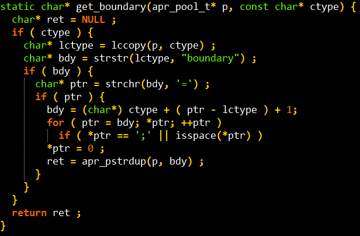
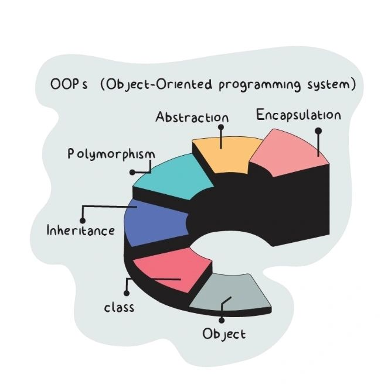

The Evolution of Programming Languages
Understanding how technology has shaped coding.
What is a Programming Language?
A system of communication that allows humans to instruct machines.
Early Beginnings
- 1940s-1950s: Assembly languages and machine code
- First generation of programming
ENIAC

The First Computer Bug
In 1947, engineers found a real moth inside the Mark II computer, causing a malfunction.
The Rise of High-Level Languages
- 1957: FORTRAN
- 1960: COBOL
- 1964: BASIC

The Structured Programming Era
- 1970s: C, Pascal, Ada
- Focus on logic, readability, maintainability

Object-Oriented Revolution
- 1980s-1990s: C++, Java, Python
- Concept of "objects" and "classes"

The Web and Scripting Languages
- 1995: JavaScript, PHP, Ruby
- Dynamic web content and automation
Modern Trends
- Cross-platform languages (e.g., Kotlin, Dart)
- Machine Learning, Data Science with Python, R

Summary
From machine code to AI — programming languages evolve with technology.

Thank You!
Questions?